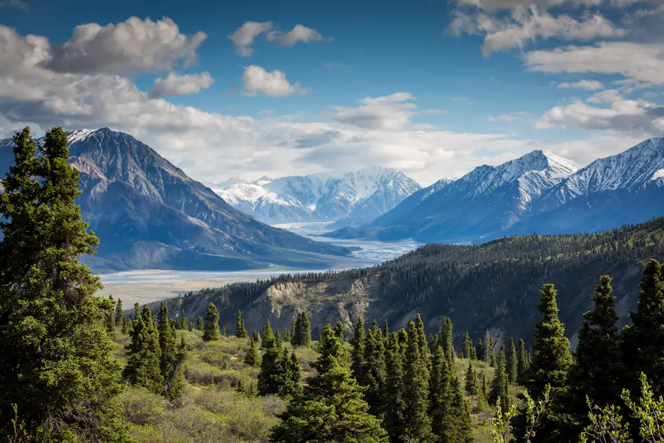
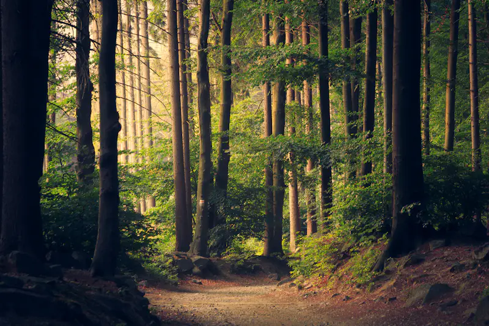
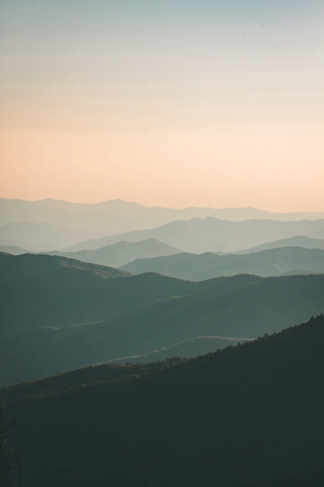
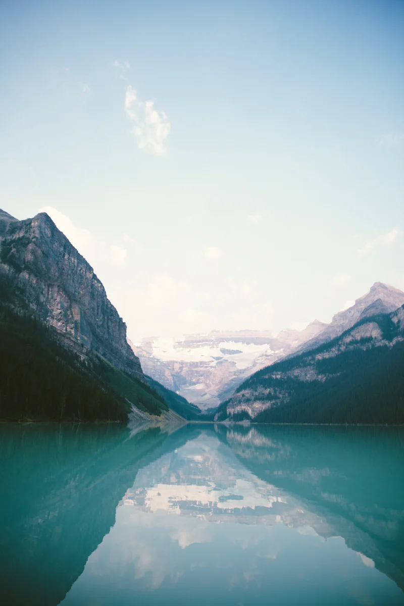
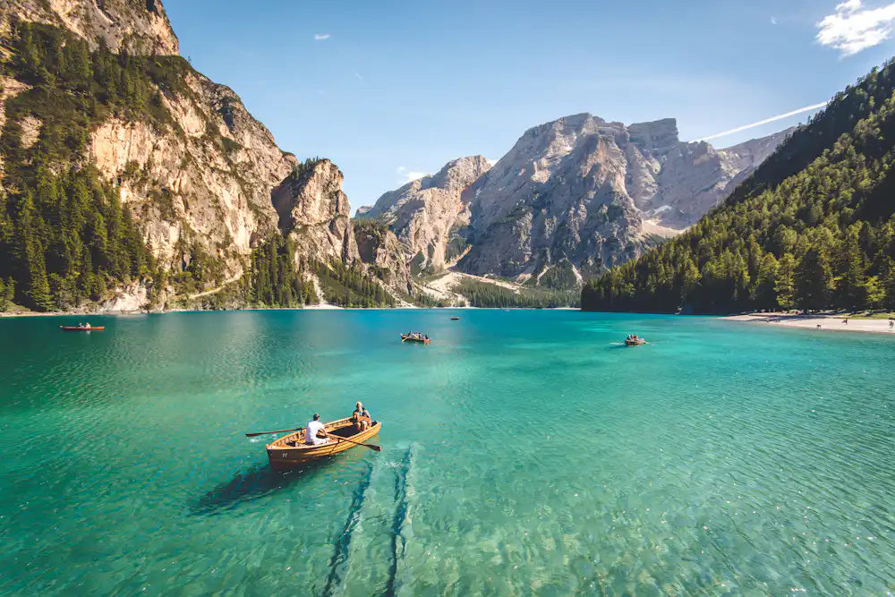
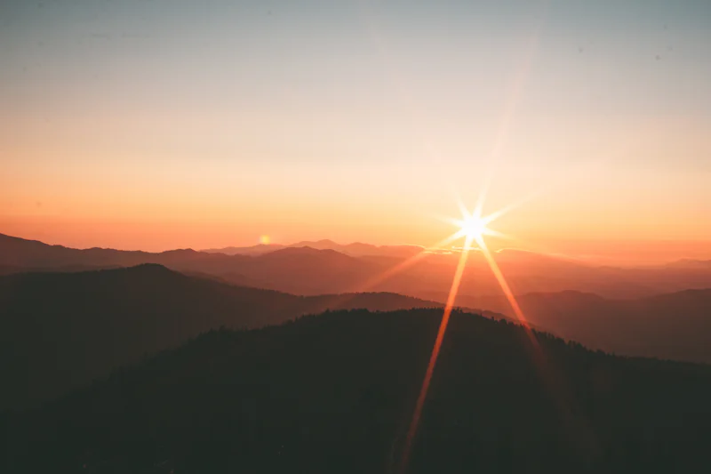
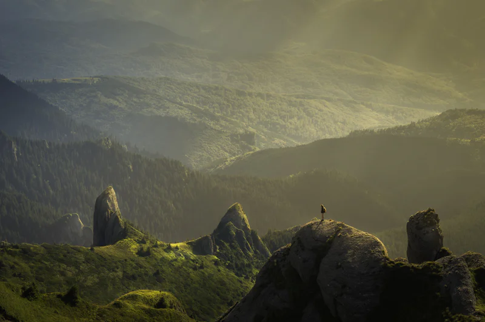

2016
The first route
A single guided traverse, planned with two local partners and no more than eight travelers.
About Stackly / Established 2016
Small journeys, built with local guides and honest route notes, with enough room for the weather to change the plan.




Our story / Why we go
Stackly began with a simple frustration: too many journeys were being sold as checklists. See this. Photograph that. Be somewhere else by dinner. We wanted the opposite—a way of traveling that left room for the place to set the pace.
Our routes are built with local guides and regional partners, people who know which pass closes early, where the light lands at breakfast, and when the honest answer is to stay put. We keep groups small, share the trade-offs, and choose fewer miles over fuller days.
We are not trying to make the outdoors easier. We are trying to make the time outside more useful: more attentive, more generous to the people who live there, and more willing to let a plan change when the mountain has other ideas.
Good travel is not a list of places. It is a quality of attention.
That is the standard we keep. Everything else—the route, the kit list, the meeting point—is there to protect it.

Dolomites / A route shaped around waterMilestones / 2016 → today
Stackly has stayed deliberately small. These are the decisions that shaped the work, not a growth chart.
A single guided traverse, planned with two local partners and no more than eight travelers.

We stopped pretending itineraries were fixed and built every departure around local conditions.

The same operating idea: fewer guests, local leadership and enough time to notice what is actually there.
Drag or use arrow keys to move through the timeline.
Principles / What we keep
They are not slogans. They are the questions we ask before a route is confirmed.
People / The core team
A small core team works with local guides and regional partners. Profiles are placeholders while the founding team is confirmed.
Culture / From the field
The useful details, the waiting, the small reward. Select a frame to look closer.
Numbers / What we keep small
Concept operating targets, not published performance data.
Knowledge that comes from living with the landscape.
Enough for good company. Few enough to move thoughtfully.
Gentle, steady or strenuous—with honest guidance.
The summit is a possibility, never the only point.
Start a conversation
Tell us what kind of days you want, how far you like to walk and what you would rather leave out. We’ll reply with an honest starting point.